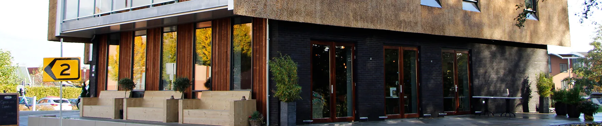

Wij vertalen de tekeningen van de architect naar concrete cijfers en bouwtekeningen, zodat het huis veilig, stevig en volgens de wet wordt gebouwd. Als constructiebedrijf zijn wij verantwoordelijk voor de draagconstructie en de stabiliteit van de woning.
Nieuwbouw
Woonhuizen

Herkenbaar?
Van architectontwerp naar bouwbare constructie
Bij nieuwbouw bepaalt de constructie in hoge mate wat er architectonisch en financieel kan. Hoe eerder dat op tafel ligt, hoe meer keuze er is.
Een vrijstaand huis naar ontwerp
Wij vertalen de tekeningen van de architect naar concrete cijfers en bouwtekeningen.
Grote glaspartijen en open plattegronden
Weinig wanden betekent dat de stabiliteit ergens anders vandaan moet komen.
Bouwen op slechte grond
De bodemgesteldheid bepaalt of het op staal kan of op palen moet.
Hoe het werkt
Wat wij voor een woonhuis uitwerken
Bij de nieuwbouw van een woonhuis zullen diverse constructieve onderdelen worden uitgewerkt. Als constructiebedrijf zijn wij verantwoordelijk voor de draagconstructie en de stabiliteit van een nieuwbouwwoning. Wij vertalen de creatieve tekeningen van de architect naar concrete cijfers en bouwtekeningen, zodat het huis veilig, stevig en volgens de wet wordt gebouwd.
Te denken valt aan het palenplan, het funderingsplan met wapeningstekeningen, de stabiliteitsvoorzieningen, de verdiepingsvloeren, daken en eventuele staalconstructies. Onze kerntaken zijn:
Constructieberekeningen
Het berekenen van de draagkracht van funderingen, vloeren, gevels, daken en balklagen. Dit bepaalt exact hoeveel en welk type materiaal (staal, beton, hout) er nodig is. De berekeningen en tekeningen van prefab constructieonderdelen, zoals systeemvloeren, trappen, balkons en staalconstructies worden meestal door de leverancier geleverd.
Het aanleveren van de uitgangspunten hiervan en de controle van de door de leverancier uitgewerkte stukken worden door ons verzorgd.
Materialen bepalen
Adviseren over de optimale bouwmaterialen op basis van de beoogde architectuur en het gewenste budget.
Wapenings- en constructietekeningen
Het maken van gedetailleerde technische tekeningen (zoals wapeningsplannen voor beton) die de aannemer exact volgt tijdens de bouw.
Toetsing aan het Bouwbesluit
Controleren of alle bouwplannen voldoen aan de wettelijke veiligheids- en constructienormen, hetgeen cruciaal is voor het verkrijgen van de omgevingsvergunning.
Begeleiding tijdens de bouw
Inspecteren van het uitgevoerde constructiewerk en bijsturen of adviseren wanneer de aannemer onvoorziene situaties tegenkomt.
Wij geven er de voorkeur aan om vroegtijdig in het ontwerpproces te worden betrokken om samen met de opdrachtgever, de architect en andere adviseurs aan een goed doordacht en economisch verantwoord ontwerp te kunnen werken.
Aanpak
De ontwerpfasen
Het ontwerpproces is opgedeeld in fasen. In elke fase leveren wij de constructieve uitgangspunten die de andere partijen op dat moment nodig hebben.
-
01
Voorlopig ontwerp
We schuiven vroeg aan bij de architect en de opdrachtgever. In deze fase gaat het om het constructieprincipe: waar komt de stabiliteit vandaan, welke overspanningen zijn haalbaar, wat betekent dat voor de fundering.
Goed om te weten Hoe eerder we meedenken, hoe meer ruimte er nog is om te kiezen.
-
02
Definitief ontwerp
Het principe wordt een uitgewerkt plan: funderingsplan, stabiliteitsvoorzieningen, vloeren, daken en gevels. De kostendeskundige kan hierop begroten, de architect kan er zijn detaillering op afstemmen.
Goed om te weten Met de constructieve uitgangspunten voor alle andere adviseurs.
-
03
Uitvoeringsfase
Wapeningstekeningen, ankerplannen en detailtekeningen: de stukken waarmee op de bouwplaats gewerkt wordt. Prefab onderdelen komen van de leverancier; wij leveren de uitgangspunten en controleren wat er terugkomt.
Goed om te weten Systeemvloeren, trappen, balkons en staalconstructies inbegrepen.
-
04
Toezicht op de bouw
We komen op de bouwplaats kijken of het uitgevoerde werk klopt met wat er berekend is, en sturen bij als de praktijk anders uitpakt dan de tekening.
Goed om te weten Als hoofdconstructeur houden we de constructieve veiligheid in de hand.
Oplevering
Wat u van ons krijgt
Funderings- en palenplan
Met wapeningstekeningen, afgestemd op de bodemgesteldheid en het gewicht van het gebouw.
Stabiliteitsvoorzieningen
De elementen die de horizontale krachten opnemen: schijven, kernen of stalen verbanden.
Uitvoeringstekeningen
Vloeren, daken, staalconstructies en de details waarmee op de bouwplaats gewerkt wordt.
Controle van derden
De uitgangspunten voor prefab leveranciers, en de toetsing van wat zij uitwerken.
Waarom Duyts
Wat u eraan heeft
Vroeg meedenken loont
In het voorlopig ontwerp is een constructieve keuze nog gratis. In de uitvoering kost dezelfde keuze geld.
Eén set stukken die klopt
Berekening, tekening en uitgangspunten sluiten op elkaar aan, en op wat de andere adviseurs nodig hebben.
Hoofdconstructeur van begin tot eind
Wij houden de constructieve veiligheid over het hele traject in de hand, ook waar derden onderdelen uitwerken.
Duurzaam waar het kan
Bij renovatie hergebruiken we zoveel mogelijk van de bestaande hoofddraagconstructie en de paalfundering.
FAQ
Wat mensen meestal nog vragen
Sinds 1 januari 2024 wordt bij nieuwbouw in gevolgklasse 1 - denk aan grondgebonden woningen en kleinere bedrijfsgebouwen - niet meer door de gemeente getoetst, maar door een onafhankelijke kwaliteitsborger. Die controleert tijdens de bouw of er volgens de berekening en de tekeningen wordt gewerkt. Onze stukken zijn daarop ingericht.
Ja, en het liefst vanaf het begin. We werken nauw samen met opdrachtgevers, architecten, aannemers en andere adviseurs, en kijken verder dan de vraag op papier.
Dat verschilt per periode en per opdracht. In de offerte vermelden wij binnen welke termijn wij kunnen starten, welke werkzaamheden wij hebben ingeschat en welke aanvullende gegevens er nog nodig zijn.
Voor al onze opdrachten hanteren wij de DNR 2011, die we standaard meesturen met de offerte. Die regeling beschrijft de rechtsverhouding tussen opdrachtgever, architect, ingenieur en adviseur. Voor al onze advieswerkzaamheden hebben wij een beroepsaansprakelijkheidsverzekering afgesloten.